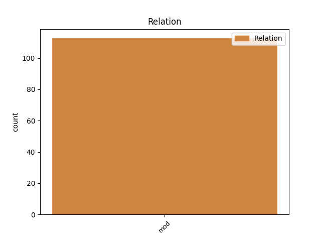
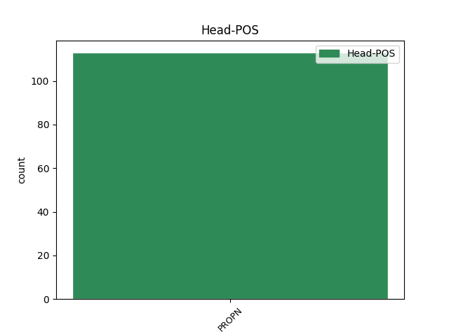
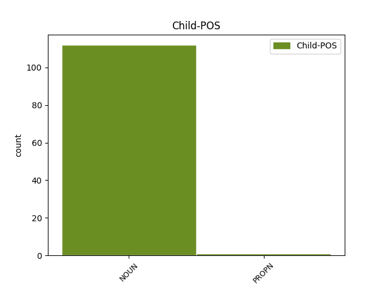

Distribution of features within this leaf



Agreement Rules sorted by frequency.
- When the dependent token is the modifer(mod) of the head token, and the head token is PROPN and the dependent token is NOUN.
1 Մեծ _ _ _ _ 0 _ _ _
2 Սևանի _ _ _ _ 0 _ _ _
3 ջրի _ _ _ _ 0 _ _ _
4 հայելու _ _ _ _ 0 _ _ _
5 մակերեսը _ _ _ _ 0 _ _ _
6 2017 _ _ _ _ 0 _ _ _
7 թվականի _ _ _ _ 0 _ _ _
8 հունվարի _ _ _ _ 0 _ _ _
9 վերջի _ _ _ _ 0 _ _ _
10 դրությամբ _ _ _ _ 0 _ _ _
11 կազմել _ _ _ _ 0 _ _ _
12 է _ _ _ _ 0 _ _ _
13 939,65 _ _ _ _ 0 _ _ _
14 ք/կմ _ _ _ _ 0 _ _ _
15 , _ _ _ _ 0 _ _ _
16 իսկ _ _ _ _ 0 _ _ _
17 Փոքր փոքր NOUN _ Animacy=Nhum|Case=Nom|Definite=Ind|Number=Sing 18 mod _ LTranslit=p’ok’r|Translit=P’ok’r
18 Սևանինը Սևանի PROPN _ Animacy=Nhum|Case=Nom|Definite=Def|NameType=Geo|Number=Sing|Number[psor]=Sing|Poss=Yes 0 _ _ _
19 ` _ _ _ _ 0 _ _ _
20 338.39 _ _ _ _ 0 _ _ _
21 : _ _ _ _ 0 _ _ _
1 Սեպտեմբերի _ _ _ _ 0 _ _ _
2 20-ին _ _ _ _ 0 _ _ _
3 Ն _ _ _ _ 0 _ _ _
4 . _ _ _ _ 0 _ _ _
5 Ս _ _ _ _ 0 _ _ _
6 . _ _ _ _ 0 _ _ _
7 Օ _ _ _ _ 0 _ _ _
8 . _ _ _ _ 0 _ _ _
9 Տ _ _ _ _ 0 _ _ _
10 . _ _ _ _ 0 _ _ _
11 Տ _ _ _ _ 0 _ _ _
12 . _ _ _ _ 0 _ _ _
13 Գարեգին _ _ _ _ 0 _ _ _
14 Երկրորդ _ _ _ _ 0 _ _ _
15 Ծայրագույն _ _ _ _ 0 _ _ _
16 Պատրիարք _ _ _ _ 0 _ _ _
17 և _ _ _ _ 0 _ _ _
18 Ամենայն _ _ _ _ 0 _ _ _
19 Հայոց _ _ _ _ 0 _ _ _
20 Կաթողիկոսը _ _ _ _ 0 _ _ _
21 Մայր _ _ _ _ 0 _ _ _
22 Աթոռ _ _ _ _ 0 _ _ _
23 Սուրբ _ _ _ _ 0 _ _ _
24 Էջմիածնում _ _ _ _ 0 _ _ _
25 ընդունեց _ _ _ _ 0 _ _ _
26 ԱՄՆ ԱՄՆ PROPN _ Abbr=Yes|Animacy=Nhum|Case=Nom|Definite=Ind|NameType=Geo|Number=Sing 27 mod _ LTranslit=AMN|Translit=AMN
27 Լոս Լոս PROPN _ Animacy=Nhum|Case=Nom|Definite=Ind|NameType=Geo|Number=Sing 0 _ _ _
28 Անջելեսի _ _ _ _ 0 _ _ _
29 Կալիֆոռնիայի _ _ _ _ 0 _ _ _
30 համալսարանի _ _ _ _ 0 _ _ _
31 ( _ _ _ _ 0 _ _ _
32 UCLA _ _ _ _ 0 _ _ _
33 ) _ _ _ _ 0 _ _ _
34 ռեկտոր _ _ _ _ 0 _ _ _
35 , _ _ _ _ 0 _ _ _
36 կենսաբան _ _ _ _ 0 _ _ _
37 , _ _ _ _ 0 _ _ _
38 ակադեմիկոս _ _ _ _ 0 _ _ _
39 Ջին _ _ _ _ 0 _ _ _
40 Բլոքին _ _ _ _ 0 _ _ _
41 ` _ _ _ _ 0 _ _ _
42 ուղեկցությամբ _ _ _ _ 0 _ _ _
43 համալսարանի _ _ _ _ 0 _ _ _
44 Դեյվիդ _ _ _ _ 0 _ _ _
45 Գեֆենի _ _ _ _ 0 _ _ _
46 անվան _ _ _ _ 0 _ _ _
47 բժշկական _ _ _ _ 0 _ _ _
48 քոլեջի _ _ _ _ 0 _ _ _
49 համաղեկավար _ _ _ _ 0 _ _ _
50 դոկտոր _ _ _ _ 0 _ _ _
51 Էրիկ _ _ _ _ 0 _ _ _
52 Էսրաիլյանի _ _ _ _ 0 _ _ _
53 : _ _ _ _ 0 _ _ _
Disagree Examples:
1 Հենց _ _ _ _ 0 _ _ _
2 նա _ _ _ _ 0 _ _ _
3 էլ _ _ _ _ 0 _ _ _
4 առևանգել _ _ _ _ 0 _ _ _
5 է _ _ _ _ 0 _ _ _
6 ոսկեմազ _ _ _ _ 0 _ _ _
7 արքայադուստր արքայադուստր NOUN _ Animacy=Hum|Case=Nom|Definite=Ind|Number=Sing 8 mod _ LTranslit=ark’ayadowstr|Translit=ark’ayadowstr
8 Փիչին Փիչ PROPN _ Animacy=Hum|Case=Dat|Definite=Def|NameType=Prs|Number=Sing 0 _ _ _
9 , _ _ _ _ 0 _ _ _
10 որին _ _ _ _ 0 _ _ _
11 և _ _ _ _ 0 _ _ _
12 պետք _ _ _ _ 0 _ _ _
13 է _ _ _ _ 0 _ _ _
14 փրկես _ _ _ _ 0 _ _ _
15 ։ _ _ _ _ 0 _ _ _
1 Հետո _ _ _ _ 0 _ _ _
2 հանդիպում _ _ _ _ 0 _ _ _
3 ես _ _ _ _ 0 _ _ _
4 Փիչի _ _ _ _ 0 _ _ _
5 հավատարիմ _ _ _ _ 0 _ _ _
6 ընկերոջը _ _ _ _ 0 _ _ _
7 ՝ _ _ _ _ 0 _ _ _
8 սնկային _ _ _ _ 0 _ _ _
9 թագավորության _ _ _ _ 0 _ _ _
10 բնակիչ բնակիչ NOUN _ Animacy=Hum|Case=Nom|Definite=Ind|Number=Sing 13 mod _ LTranslit=bnakič|SpaceAfter=No|Translit=bnakič
11 , _ _ _ _ 0 _ _ _
12 թզուկ _ _ _ _ 0 _ _ _
13 Թոադին Թոադ PROPN _ Animacy=Hum|Case=Dat|Definite=Def|Number=Sing 0 _ _ _
14 ։ _ _ _ _ 0 _ _ _
1 Նիկոլ _ _ _ _ 0 _ _ _
2 Փաշինյանը _ _ _ _ 0 _ _ _
3 ողջունել _ _ _ _ 0 _ _ _
4 է _ _ _ _ 0 _ _ _
5 պարոն պարոն NOUN _ Animacy=Hum|Case=Nom|Definite=Ind|Number=Sing 6 mod _ LTranslit=paron|Translit=paron
6 Շվեյկարդի Շվեյկարդ PROPN _ Animacy=Hum|Case=Dat|Definite=Ind|NameType=Sur|Number=Sing 0 _ _ _
7 նախաձեռնությունը _ _ _ _ 0 _ _ _
8 և _ _ _ _ 0 _ _ _
9 ներկայացրել _ _ _ _ 0 _ _ _
10 էներգետիկայի _ _ _ _ 0 _ _ _
11 ոլորտում _ _ _ _ 0 _ _ _
12 կառավարության _ _ _ _ 0 _ _ _
13 առաջիկա _ _ _ _ 0 _ _ _
14 տարիների _ _ _ _ 0 _ _ _
15 ռազմավարությունն _ _ _ _ 0 _ _ _
16 ու _ _ _ _ 0 _ _ _
17 այդ _ _ _ _ 0 _ _ _
18 բնագավառի _ _ _ _ 0 _ _ _
19 զարգացման _ _ _ _ 0 _ _ _
20 հեռանկարները _ _ _ _ 0 _ _ _
21 : _ _ _ _ 0 _ _ _
1 Այնպես _ _ _ _ 0 _ _ _
2 պատահեց _ _ _ _ 0 _ _ _
3 , _ _ _ _ 0 _ _ _
4 որ _ _ _ _ 0 _ _ _
5 Իգնատի _ _ _ _ 0 _ _ _
6 ետևից _ _ _ _ 0 _ _ _
7 նաև _ _ _ _ 0 _ _ _
8 Շաքրոյին _ _ _ _ 0 _ _ _
9 տարան _ _ _ _ 0 _ _ _
10 . _ _ _ _ 0 _ _ _
11 զինվորական _ _ _ _ 0 _ _ _
12 շինելի _ _ _ _ 0 _ _ _
13 մեջ _ _ _ _ 0 _ _ _
14 եմ _ _ _ _ 0 _ _ _
15 հիշում _ _ _ _ 0 _ _ _
16 նաև _ _ _ _ 0 _ _ _
17 Իշխան _ _ _ _ 0 _ _ _
18 պապիս _ _ _ _ 0 _ _ _
19 , _ _ _ _ 0 _ _ _
20 մեր _ _ _ _ 0 _ _ _
21 ութ _ _ _ _ 0 _ _ _
22 անտեր _ _ _ _ 0 _ _ _
23 երեխայի _ _ _ _ 0 _ _ _
24 վրա _ _ _ _ 0 _ _ _
25 Դսեղ _ _ _ _ 0 _ _ _
26 գյուղից _ _ _ _ 0 _ _ _
27 դարձյալ _ _ _ _ 0 _ _ _
28 երեք _ _ _ _ 0 _ _ _
29 որբ _ _ _ _ 0 _ _ _
30 ավելացավ _ _ _ _ 0 _ _ _
31 , _ _ _ _ 0 _ _ _
32 հեռավոր _ _ _ _ 0 _ _ _
33 Սանահին _ _ _ _ 0 _ _ _
34 գյուղից _ _ _ _ 0 _ _ _
35 Ահնիձոր _ _ _ _ 0 _ _ _
36 բերվեց _ _ _ _ 0 _ _ _
37 նաև _ _ _ _ 0 _ _ _
38 Իշխանի _ _ _ _ 0 _ _ _
39 հարյուրամյա _ _ _ _ 0 _ _ _
40 մայրը _ _ _ _ 0 _ _ _
41 , _ _ _ _ 0 _ _ _
42 ձմռան _ _ _ _ 0 _ _ _
43 երկար _ _ _ _ 0 _ _ _
44 գիշերներին _ _ _ _ 0 _ _ _
45 երեխաներից _ _ _ _ 0 _ _ _
46 ավագներս _ _ _ _ 0 _ _ _
47 կաթնակերների _ _ _ _ 0 _ _ _
48 ու _ _ _ _ 0 _ _ _
49 պառավների _ _ _ _ 0 _ _ _
50 այդ _ _ _ _ 0 _ _ _
51 դասարանի _ _ _ _ 0 _ _ _
52 համար _ _ _ _ 0 _ _ _
53 հազիվ _ _ _ _ 0 _ _ _
54 գիրկապով _ _ _ _ 0 _ _ _
55 ուզում _ _ _ _ 0 _ _ _
56 էինք _ _ _ _ 0 _ _ _
57 կարդալ _ _ _ _ 0 _ _ _
58 այդ _ _ _ _ 0 _ _ _
59 տան _ _ _ _ 0 _ _ _
60 միակ _ _ _ _ 0 _ _ _
61 գեղարվեստական _ _ _ _ 0 _ _ _
62 գիրքը _ _ _ _ 0 _ _ _
63 ՝ _ _ _ _ 0 _ _ _
64 նկարների _ _ _ _ 0 _ _ _
65 շրշուն _ _ _ _ 0 _ _ _
66 պահպանիչներով _ _ _ _ 0 _ _ _
67 « _ _ _ _ 0 _ _ _
68 Սասունցի սասունցի NOUN _ Animacy=Hum|Case=Nom|Definite=Ind|Number=Sing 69 mod _ LTranslit=sasownc’i|Translit=Sasownc’i
69 Դավթի Դավիթ PROPN _ Animacy=Hum|Case=Dat|Definite=Ind|NameType=Giv|Number=Sing 0 _ _ _
70 » _ _ _ _ 0 _ _ _
71 1939-ի _ _ _ _ 0 _ _ _
72 հոբելյանական _ _ _ _ 0 _ _ _
73 շքեղ _ _ _ _ 0 _ _ _
74 հրատարակությունը _ _ _ _ 0 _ _ _
75 , _ _ _ _ 0 _ _ _
76 և _ _ _ _ 0 _ _ _
77 մեր _ _ _ _ 0 _ _ _
78 բոլորիս _ _ _ _ 0 _ _ _
79 տատը _ _ _ _ 0 _ _ _
80 ՝ _ _ _ _ 0 _ _ _
81 Իշխանի _ _ _ _ 0 _ _ _
82 քույրը _ _ _ _ 0 _ _ _
83 , _ _ _ _ 0 _ _ _
84 գիրքը _ _ _ _ 0 _ _ _
85 ձեռքներիցս _ _ _ _ 0 _ _ _
86 առավ _ _ _ _ 0 _ _ _
87 ծալեց _ _ _ _ 0 _ _ _
88 , _ _ _ _ 0 _ _ _
89 խաբեց _ _ _ _ 0 _ _ _
90 , _ _ _ _ 0 _ _ _
91 թե _ _ _ _ 0 _ _ _
92 հենց _ _ _ _ 0 _ _ _
93 այդ _ _ _ _ 0 _ _ _
94 պատմությունն _ _ _ _ 0 _ _ _
95 է _ _ _ _ 0 _ _ _
96 պատմում _ _ _ _ 0 _ _ _
97 և _ _ _ _ 0 _ _ _
98 պատմեց _ _ _ _ 0 _ _ _
99 իր _ _ _ _ 0 _ _ _
100 կյանքի _ _ _ _ 0 _ _ _
101 մղձավանջը _ _ _ _ 0 _ _ _
102 ։ _ _ _ _ 0 _ _ _
1 Նման _ _ _ _ 0 _ _ _
2 մի _ _ _ _ 0 _ _ _
3 օր _ _ _ _ 0 _ _ _
4 էլ _ _ _ _ 0 _ _ _
5 պահակության _ _ _ _ 0 _ _ _
6 ժամանակ _ _ _ _ 0 _ _ _
7 պարսպի _ _ _ _ 0 _ _ _
8 մոտակայքում _ _ _ _ 0 _ _ _
9 նկատեց _ _ _ _ 0 _ _ _
10 իր _ _ _ _ 0 _ _ _
11 ծառաներից _ _ _ _ 0 _ _ _
12 մեկին _ _ _ _ 0 _ _ _
13 ՝ _ _ _ _ 0 _ _ _
14 ձիապան ձիապան NOUN _ Animacy=Hum|Case=Nom|Definite=Ind|Number=Sing 15 mod _ LTranslit=jiapan|Translit=jiapan
15 Ներսեսին Ներսես PROPN _ Animacy=Hum|Case=Dat|Definite=Def|NameType=Giv|Number=Sing 0 _ _ _
16 : _ _ _ _ 0 _ _ _